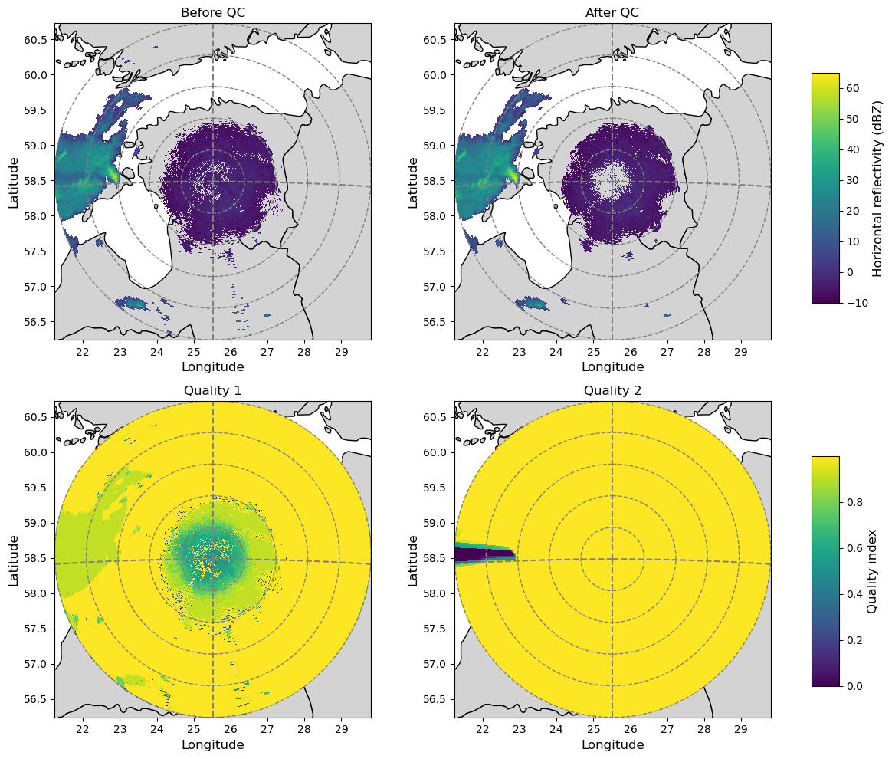
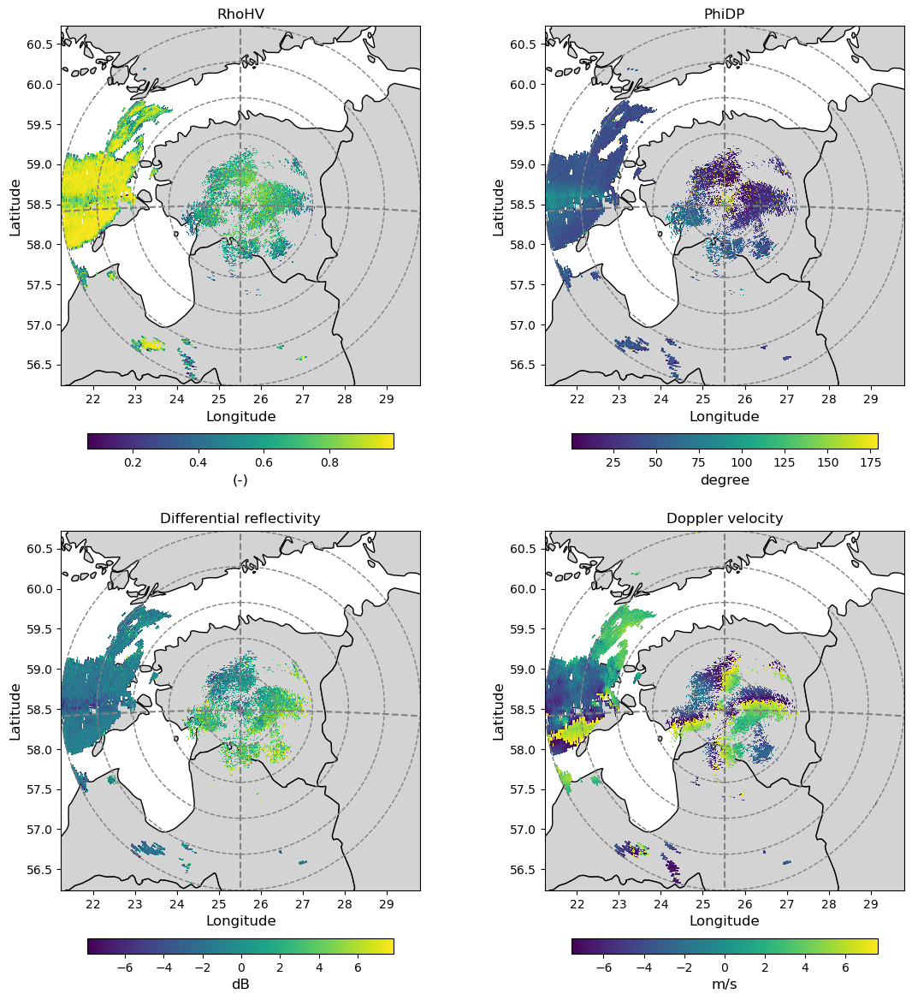
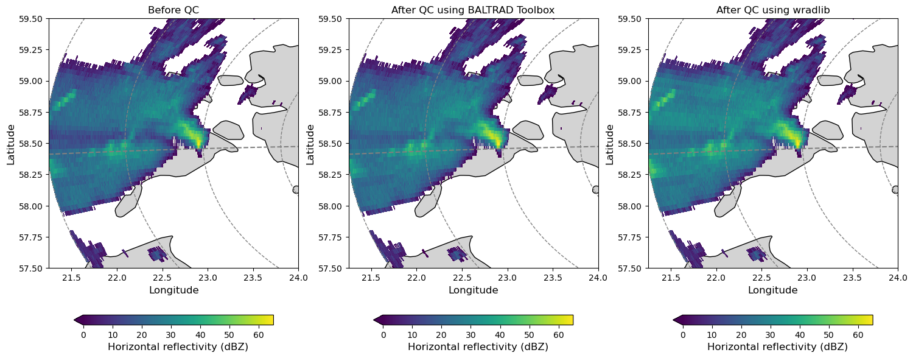
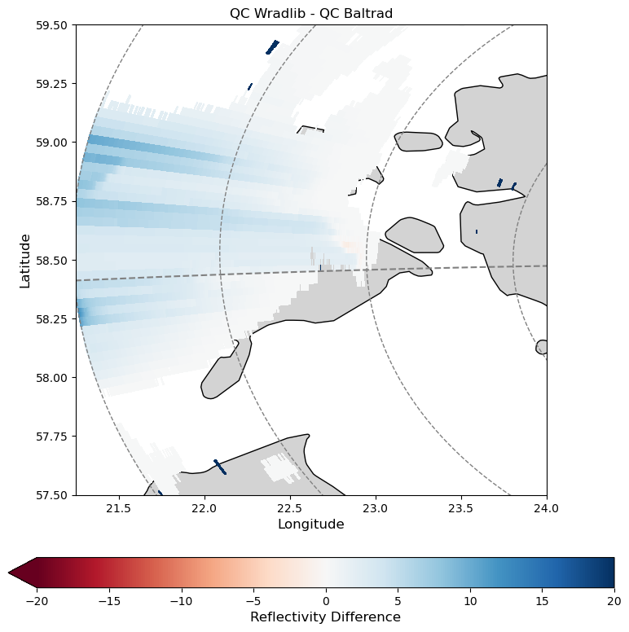

Interaction of BALTRAD and wradlib via ODIM_H5
Prepare your environment
%matplotlib inline
import numpy as np
import matplotlib.pyplot as plt
import wradlib
import gc
Run BALTRAD’s odc_toolbox
First, you will process a scan from Suergavere (Estland) by using BALTRAD’s odc_toolbox.
From your VM’s vagrant directory, navigate to the folder /baltrad2wradlib.
Execute the following command:
$ odc_toolbox -i in -o out -q ropo,radvol-att
Check whether a file was created in the folder /out.
BALTRAD will not create output files if these already exist. You can check that via !ls out.
!odc_toolbox -i in -o out -q ropo,radvol-att
/srv/conda/envs/notebook/rave/Lib/rave.py:244: SyntaxWarning: "is" with a literal. Did you mean "=="?
if typ is 'dataset':
/srv/conda/envs/notebook/rave/Lib/rave_info.py:87: SyntaxWarning: "is" with a literal. Did you mean "=="?
if t is 'int':
/srv/conda/envs/notebook/rave/Lib/rave_info.py:89: SyntaxWarning: "is" with a literal. Did you mean "=="?
elif t is 'float':
/srv/conda/envs/notebook/rave/Lib/rave_info.py:91: SyntaxWarning: "is" with a literal. Did you mean "=="?
elif t is 'sequence':
/srv/conda/envs/notebook/rave/Lib/rave_info.py:266: SyntaxWarning: "is not" with a literal. Did you mean "!="?
elif path[0] is not '/':
/srv/conda/envs/notebook/rave/Lib/rave_h5rad.py:164: SyntaxWarning: "is" with a literal. Did you mean "=="?
elif k is 'sets':
/srv/conda/envs/notebook/rave/Lib/rave_h5rad.py:341: SyntaxWarning: "is" with a literal. Did you mean "=="?
elif obj is 'xsect':
/srv/conda/envs/notebook/rave/Lib/rave_h5rad.py:351: SyntaxWarning: "is" with a literal. Did you mean "=="?
elif obj is 'vp':
/srv/conda/envs/notebook/rave/Lib/rave_h5rad.py:360: SyntaxWarning: "is" with a literal. Did you mean "=="?
elif obj is 'thvp':
/srv/conda/envs/notebook/rave/Lib/rave_h5rad.py:382: SyntaxWarning: "is" with a literal. Did you mean "=="?
elif obj is 'xsect':
/srv/conda/envs/notebook/rave/Lib/rave_h5rad.py:386: SyntaxWarning: "is" with a literal. Did you mean "=="?
elif obj is 'vp':
/srv/conda/envs/notebook/rave/Lib/rave_h5rad.py:390: SyntaxWarning: "is" with a literal. Did you mean "=="?
elif obj is 'thvp':
/srv/conda/envs/notebook/rave/Lib/rave_h5rad.py:394: SyntaxWarning: "is not" with a literal. Did you mean "!="?
if obj is not 'vp':
/srv/conda/envs/notebook/rave/Lib/H5radHelper.py:98: SyntaxWarning: "is not" with a literal. Did you mean "!="?
if h5typ is not "string":
/srv/conda/envs/notebook/rave/Lib/H5radHelper.py:105: SyntaxWarning: "is" with a literal. Did you mean "=="?
if h5typ is "sequence":
/srv/conda/envs/notebook/rave/Lib/H5radHelper.py:112: SyntaxWarning: "is" with a literal. Did you mean "=="?
elif h5typ is "dataset":
/srv/conda/envs/notebook/rave/Lib/H5radHelper.py:117: SyntaxWarning: "is" with a literal. Did you mean "=="?
elif h5typ is "string":
/srv/conda/envs/notebook/rave/Lib/H5radHelper.py:140: SyntaxWarning: "is" with a literal. Did you mean "=="?
if __name__ is "__main__":
Exception ignored in: <function _after_at_fork_child_reinit_locks at 0x7f36010d4940>
Traceback (most recent call last):
File "/srv/conda/envs/notebook/lib/python3.9/logging/__init__.py", line 255, in _after_at_fork_child_reinit_locks
handler._at_fork_reinit()
File "/srv/conda/envs/notebook/lib/python3.9/logging/__init__.py", line 894, in _at_fork_reinit
self.lock._at_fork_reinit()
AttributeError: 'RLock' object has no attribute '_at_fork_reinit'
Exception ignored in: <function _after_at_fork_child_reinit_locks at 0x7f36010d4940>
Traceback (most recent call last):
File "/srv/conda/envs/notebook/lib/python3.9/logging/__init__.py", line 255, in _after_at_fork_child_reinit_locks
handler._at_fork_reinit()
File "/srv/conda/envs/notebook/lib/python3.9/logging/__init__.py", line 894, in _at_fork_reinit
self.lock._at_fork_reinit()
AttributeError: 'RLock' object has no attribute '_at_fork_reinit'
Objects created: 1509
Objects deleted: 1509
Objects pending: 0
!ls out
201405190715_SUR.h5
#!ncdump -h out/201405190715_SUR.h5
Read and inspect data from Suergavere (Estonia) before and after QC with odc_toolbox
inp = wradlib.io.open_odim_dataset("in/201405190715_SUR.h5", decode_cf=False)
out = wradlib.io.open_odim_dataset("out/201405190715_SUR.h5", decode_cf=False)
fix some ODIM_H5 inconsistencies
swp_in = inp[0]
for name, ds in swp_in.data_vars.items():
if name not in ["rtime","time", "sweep_mode", "longitude", "latitude", "altitude"]:
if ds.dtype == "int16":
swp_in[name] = ds.astype("uint16")
if name in ["ZDR"]:
swp_in[name].attrs["add_offset"] = -swp_in[name].attrs["add_offset"]
import xarray as xr
swp_in = xr.decode_cf(swp_in)
swp_out = out[0]
for name, ds in swp_out.data_vars.items():
if name not in ["rtime", "time", "sweep_mode", "longitude", "latitude", "altitude"]:
if ds.dtype == "int16":
swp_out[name] = ds.astype("uint16")
swp_out = xr.decode_cf(swp_out)
Georeference and select fields
proj = wradlib.georef.epsg_to_osr(4326)
swp_in = swp_in.pipe(wradlib.georef.georeference_dataset, proj=proj)
# fix range in out file, since it's terribly broken
swp_out = swp_out.assign({"range": swp_in.range}).pipe(wradlib.georef.georeference_dataset, proj=proj)
before = swp_in.DBZH
after = swp_out.DBZH
qual1 = swp_out.quality1
qual2 = swp_out.QIND
Design a plot we will use for all PPIs in this exercise
shpfile = "shp/europe_countries.shp"
sf = wradlib.io.VectorSource(shpfile, name="src")
# A little helper funciton to harmonize all plots
def plot_ppi_to_ax(ppi, ax, title="", cb=True, cb_label="", cb_shrink=1., bbox=None, extend="min", **kwargs):
"""This is the function that we use in this exercise to plot PPIs with uniform georeferencing and style.
"""
# Read, project and plot country shapefile as background
sf.geo.plot(ax=ax, facecolor="lightgrey", edgecolor="k", linewidths=1, zorder=-1)
# plot data and range rings
pm = ppi.plot(x="x", y="y", center=False, add_colorbar=False, **kwargs)
site = (ppi.longitude.values, ppi.latitude.values, ppi.altitude.values)
wradlib.vis.plot_ppi_crosshair(site=site,
ranges=[50000, 100000,150000, 200000, ppi.range.max().values],
angles=[0, 90, 180, 270],
proj=proj,
elev=ppi.elevation.median().values,
ax=ax)
if bbox is None:
xmin = ppi.x.min().values
ymin = ppi.y.min().values
xmax = ppi.x.max().values
ymax = ppi.y.max().values
else:
xmin = bbox[0]
ymin = bbox[1]
xmax = bbox[2]
ymax = bbox[3]
# bounding box and aspect
ax.set_xlim(xmin, xmax)
ax.set_ylim(ymin, ymax)
xdiff = xmax - xmin
ydiff = ymax - ymin
ax.set_aspect(xdiff/ydiff)
# set title
plt.title(title)
# set axes lables
plt.xlabel("Longitude", fontsize="large")
plt.ylabel("Latitude", fontsize="large")
# plot colorbar
if cb:
cbar = plt.colorbar(pm, shrink=cb_shrink, orientation="horizontal", extend=extend, pad=0.1)
cbar.set_label(cb_label, fontsize="large")
gc.collect()
return ax, pm
Warning 1: Layer src has no spatial index, DROP SPATIAL INDEX failed.
Plot the selected fields into one figure
fig = plt.figure(figsize=(12,10))
ax = plt.subplot(221, aspect="equal")
ax, pm = plot_ppi_to_ax(before.where(before>-10), ax=ax, title="Before QC", cb=False, vmin=-10, vmax=65)
ax = plt.subplot(222, aspect="equal")
ax, pm = plot_ppi_to_ax(after.where(after>-10), ax=ax, title="After QC", cb=False, vmin=-10, vmax=65)
ax = plt.subplot(223, aspect="equal")
ax, qm = plot_ppi_to_ax(qual1, ax=ax, title="Quality 1", cb=False)
ax = plt.subplot(224, aspect="equal")
ax, qm = plot_ppi_to_ax(qual2, ax=ax, title="Quality 2", cb=False)
plt.tight_layout()
# Add colorbars
fig.subplots_adjust(right=0.9)
cax = fig.add_axes((0.9, 0.6, 0.03, 0.3))
cbar = plt.colorbar(pm, cax=cax)
cbar.set_label("Horizontal reflectivity (dBZ)", fontsize="large")
cax = fig.add_axes((0.9, 0.1, 0.03, 0.3))
cbar = plt.colorbar(qm, cax=cax)
cbar.set_label("Quality index", fontsize="large")

Plot the polarimetric moments from the original ODIM_H5 dataset
fig = plt.figure(figsize=(12,12))
ax = plt.subplot(221, aspect="equal")
ax, pm = plot_ppi_to_ax(swp_in.RHOHV.where(swp_in.RHOHV>0), ax=ax, title="RhoHV", cb_label="(-)", cb_shrink=0.6, extend="neither")
ax = plt.subplot(222, aspect="equal")
ax, pm = plot_ppi_to_ax(swp_in.PHIDP.where(swp_in.PHIDP > 0), ax=ax, title="PhiDP", cb_label="degree", cb_shrink=0.6, extend="neither")
ax = plt.subplot(223, aspect="equal")
ax, pm = plot_ppi_to_ax(swp_in.ZDR.where(swp_in.ZDR > -8), ax=ax, title="Differential reflectivity", cb_label="dB", cb_shrink=0.6, extend="neither")
ax = plt.subplot(224, aspect="equal")
ax, pm = plot_ppi_to_ax(swp_in.VRAD.where(swp_in.VRAD > -8), ax=ax, title="Doppler velocity", cb_label="m/s", cb_shrink=0.6, extend="neither")
plt.tight_layout()

Try some filtering and attenuation correction
# Set ZH to a very low value where we do not expect valid data
zh_filtered = np.where(np.isnan(before), -32., before)
pia = wradlib.atten.correct_attenuation_constrained(before.fillna(-32).values,
constraints=[wradlib.atten.constraint_dbz,
wradlib.atten.constraint_pia],
constraint_args=[[64.0],
[20.0]])
# Correct reflectivity by PIA
after2 = before + pia
# Mask out non-meteorological echoes
after2 = after2.where(before)
/srv/conda/envs/notebook/lib/python3.9/site-packages/wradlib/trafo.py:261: RuntimeWarning: overflow encountered in power
return 10.0 ** (x / 10.0)
/srv/conda/envs/notebook/lib/python3.9/site-packages/wradlib/atten.py:521: RuntimeWarning: overflow encountered in cast
pia[beams2correct] = sub_pia
Compare results against QC from odc_toolbox
fig = plt.figure(figsize=(18,10))
bbox = [21.25, 57.5, 24, 59.5]
shrink = 0.8
ax = plt.subplot(131, aspect="equal")
ax, pm = plot_ppi_to_ax(before.where(before > -32), ax=ax, title="Before QC", cb_label="Horizontal reflectivity (dBZ)",
cb_shrink=shrink, bbox=bbox, vmin=0, vmax=65)
ax = plt.subplot(132, aspect="equal")
ax, pm = plot_ppi_to_ax(after.where(before > -32), ax=ax, title="After QC using BALTRAD Toolbox", cb_label="Horizontal reflectivity (dBZ)",
cb_shrink=shrink, bbox=bbox, vmin=0, vmax=65)
ax = plt.subplot(133, aspect="equal")
ax, pm = plot_ppi_to_ax(after2.where(before > -32), ax=ax, title="After QC using wradlib", cb_label="Horizontal reflectivity (dBZ)",
cb_shrink=shrink, bbox=bbox, vmin=0, vmax=65)

Difference Plot
fig = plt.figure(figsize=(12,10))
bbox = [21.25, 57.5, 24, 59.5]
shrink = 0.8
ax = plt.subplot(111, aspect="equal")
ax, pm = plot_ppi_to_ax((after2-after).where(before > -32), ax=ax, title="QC Wradlib - QC Baltrad", cb_label="Reflectivity Difference",
cb_shrink=shrink, bbox=bbox, vmin=-20, vmax=20, cmap="RdBu")
